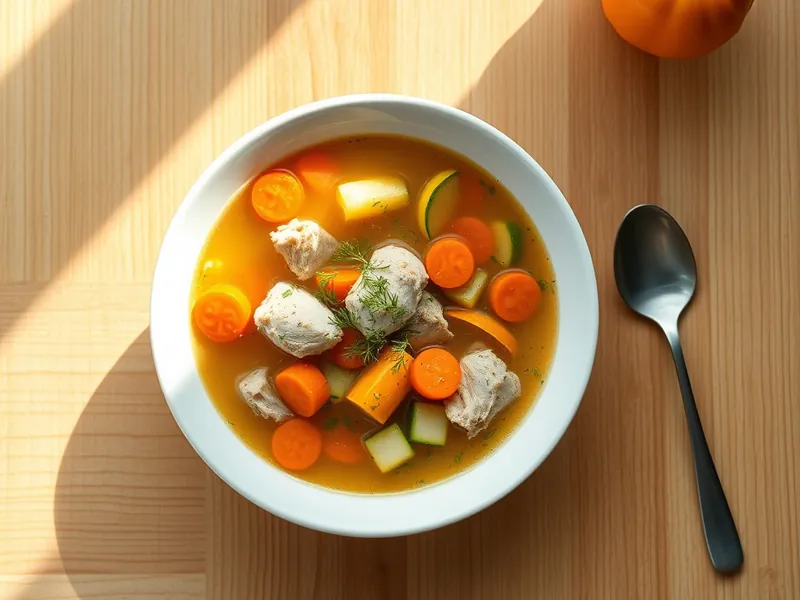

Суп с индейкой и кабачком
Диетический суп из филе индейки с кабачком, морковью и зеленью
30 мин4 порц.157 ккал на порциюБ 25 · Ж 2 · У 10Русская кухня
Открыть в приложении: порции, таймеры, список покупок
Продукты на 4 порц.
- Филе индейки400 г
- Кабачок1 шт
- Морковь1 шт
- Лук репчатый1 шт
- Перец болгарский1 шт
- Вода1500 мл
- Лавровый лист1 шт
- Соль1,5 ч. л.
- Укроп0,5 пучка
Как готовить
- Нарежьте индейку кубиками 1,5 см, залейте холодной водой и доведите до кипения на сильном огне. Снимите пену.
- Нарежьте морковь кружками, лук и перец мелкими кубиками, добавьте в кастрюлю вместе с лавровым листом. Варите 10 минут на среднем огне.
- Добавьте кабачок кубиками и посолите. Варите ещё 7-8 минут, пока кабачок не станет мягким, а индейка не будет легко разрезаться.
- Снимите с огня, уберите лавровый лист и посыпьте рубленым укропом.
Совет. Индейку режьте мелко, тогда она сварится за 15-18 минут и останется мягкой. Без зажарки суп подходит для детского и диетического меню.